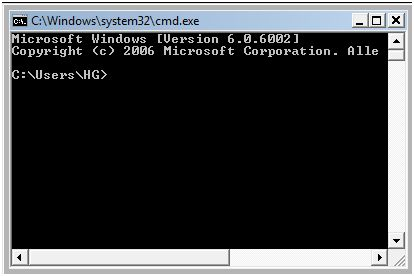

Antwort:
Natürlich.
Natürlich.
Ein einfacher Test ist das Öffnen eines Kommandozeilenfensters (ein DOS-Fenster). Je nach Windows Version gibt es zwei Möglichkeiten ein DOS-Fenster zu starten:
cmd ein.command oder cmd ein).Sie sollten dann ein ähnliches Fenster wie dieses sehen:

Wechseln Sie dann in das Verzeichnis C:\Programme\Java\jdk1.6.0_21\bin (statt jdk1.6.0_21 nehmen Sie das Verzeichnis, in das Sie Java installiert haben). Dazu geben Sie im DOS-Fenster den folgenden Befehl ein:
cd \Programme\java\jdk1.6.0_21\bin
Das setzt voraus, dass Sie sich auf dem Laufwerk befinden, auf dem sich das Java Verzeichnis befindet — meistens C:. Sollten Sie sich auf einem anderen Laufwerk befinden, müssen Sie zuerst auf das Laufwerk C: wechseln. Geben Sie dazu den Laufwerksbuchstaben gefolgt von einem Doppelpunkt ein:
c:Wechseln Sie danach mit
cd in das Verzeichnis bin:
cd \Programme\java\jdk1.6.0_21\bin
Geben Sie hinter der Eingabeauforderung javac ein.
C:\Programme\java\jdk1.6.0_21\bin>javac
Der Java Compiler sollte kurz laufen. Er wird ungefähr 15 Zeilen mit Hinweisen ausgeben wie er zu benutzen ist. (Einzelheiten wie er zu verwenden ist, werden später in diesem Kapitel besprochen.)
Wenn Sie bei oracle.com sind, besorgen Sie sich die Java SE 6 Documentation (englisch) (Klicken Sie rechts auf den Button 'Download Zip').
Sie kommt in einer Datei jdk-6uxx-docs.zip (wobei anstelle von xx die jeweilige Versionsnummer steht, z.B. jdk-6u21-docs.zip).
Die Datei muss nach dem Herunterladen entpackt werden.
Bei den meisten Computern kann das Entpacken mit einem Klicken (bzw. Doppelklick) auf den Dateinamen gestartet werden.
Als Ergebnis werden Sie eine Reihe von Webseiten (gespeichert auf Ihrem Computer) haben,
die die Merkmale von Java beschreiben.
Wenn Sie ein Programm erstellen, bewahren Sie es in demselben Verzeichnis auf wie den Compiler?